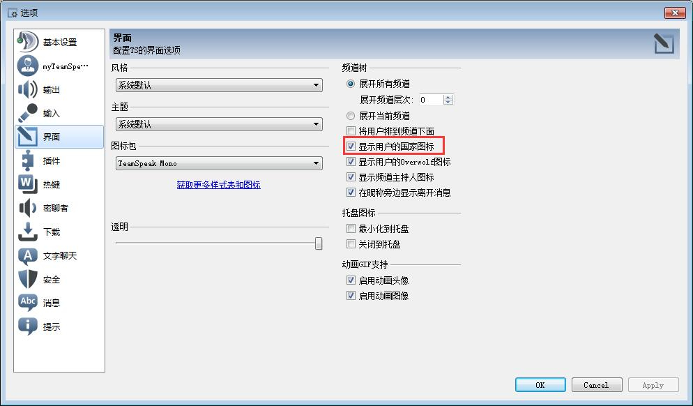

|
1、Q：怎么进去就要申请账户？ A：注册只是为了同步身份数据，可以点击暂不登录或跳过步骤直接使用，无影响。 2、Q：有杂音怎么办？ A：可以在工具=>选项=>输入中把语音感应激活调大点，调至不说话时语音不激活；同时把减少回音、回音消除、高级选项=>清除背景噪声打开，按下OK或者Apply保存。 3、Q：静音时有滴滴声警告怎么关？ A：在工具=>选项=>基本设置中，把麦克风静音时发言，系统发出声音警告一项取消勾选，按下OK或者Apply保存。 4、Q：服务器提示声音怎么关掉？ A：在工具=>选项=>提示中，把语音提示选项栏选为无，按下OK或者Apply保存。  5、Q：怎么显示别人的国家图标？ A：在工具=>选项=>界面中，把显示用户的国家图标一项勾选，按下OK或者Apply保存。  |